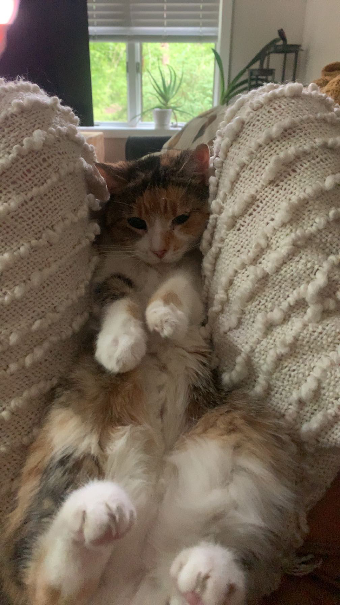
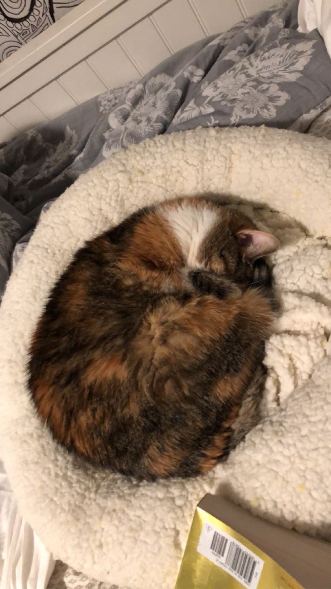
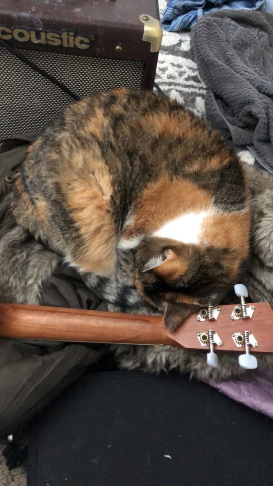
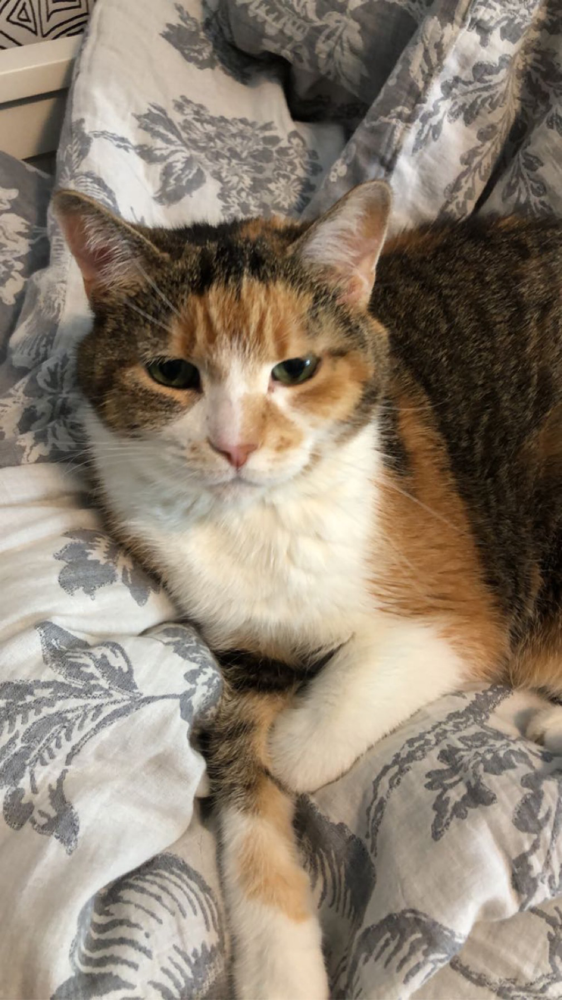
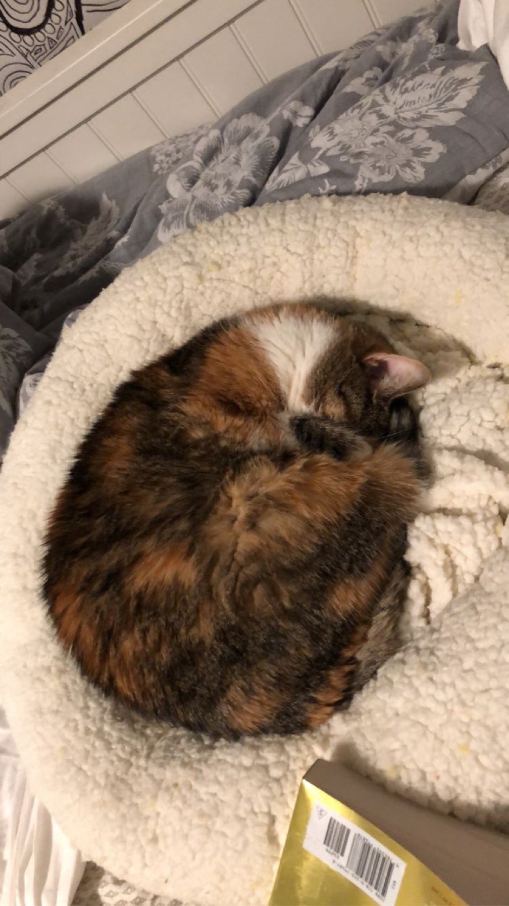
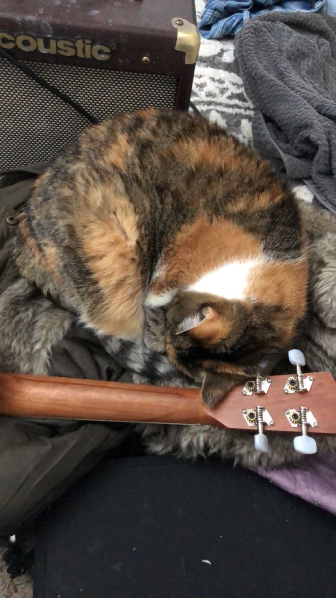
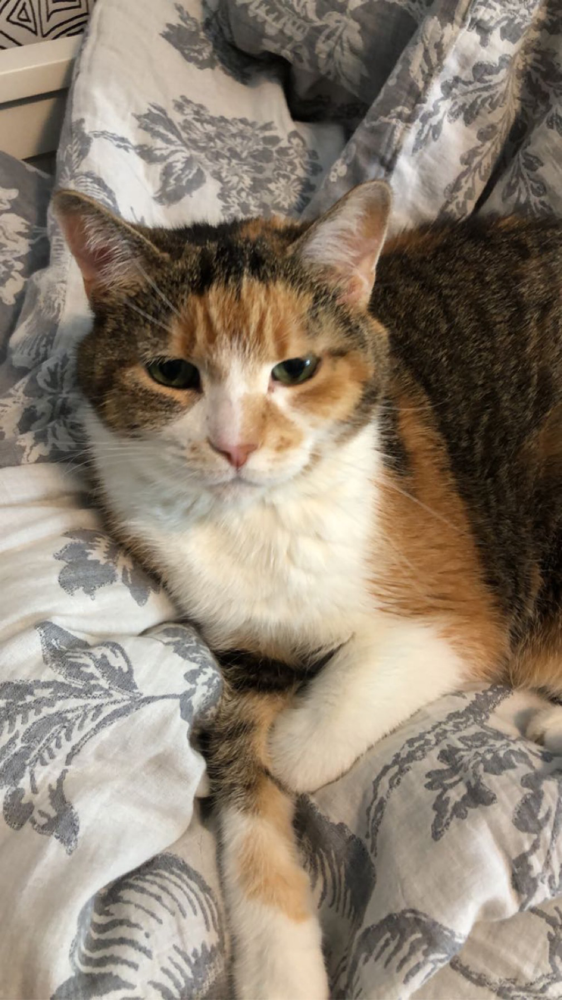
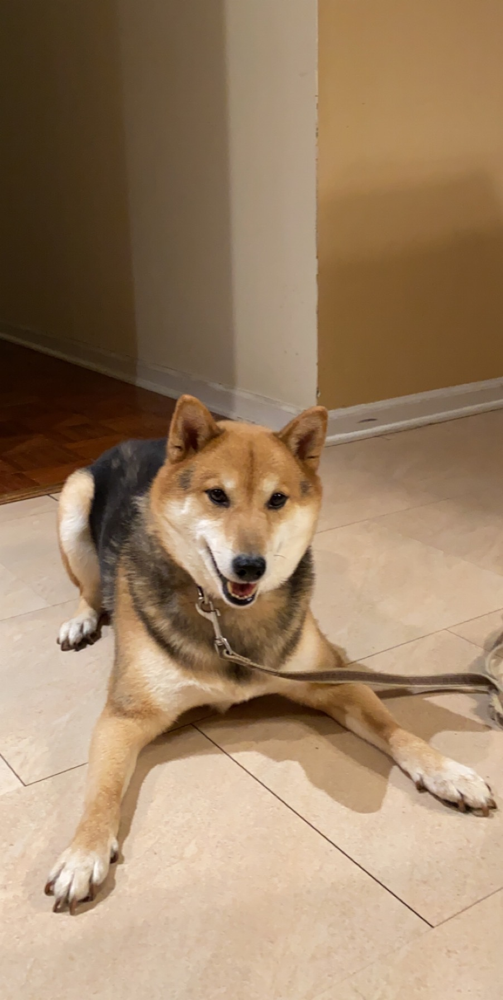

Maui

Breif description
Maui is a two-year-old mini-doodle who thinks he is as big as a German shepherd. This mindset allows him to voice his opinion, especially when demanding food or attention. He is also a classic momma's boy, as he has learned if he is annoying enough, he can get anything he demands.
During his lounging time, he gets to the highest chair he can get on and stares outside, waiting either for guests or belly rubs. He also has the tendency to force his mother to go to sleep as soon as his father goes to bed.
Photo Gallery


List of Likes
- Car Rides
- Being Chased
- Sitting on High Places
Lucy
Breif description
Lucy is a 17-year-old calico that I’ve had since I was 5, she has pretty much grown up with me my whole life. Even though she’s old she’s still kickin’ it and enjoys running around the house at 4am.
Her favorite foods include anything but her kibble. She enjoys sunbathing and long naps, along with lots of petting. However, she hates getting her stomach rubbed.
Photo Gallery
 





List of Likes
- Sleeping
- Food
- Her bed
Bear
Breif description
Bear is a lazy, food-loving dog that is sometimes playful. His favorite activity is lying in the sun on his side and lounging. He enjoys playing with his toys and loves to fetch them when you throw them, but eventually, he gets bored and just stops fetching them and lays down.
Bear is also scared of a lot of things. He doesn’t like water (showers and even rain) or getting his nails clipped, and he’s sometimes even so lazy that he’ll just stop walking and sit down until you turn around and go back home.
Photo Gallery


List of Likes
- Food
- Laying in bed
- Fetch
Hachi

Breif description
Hachi is a 13 year old Akita. He’s a very old boy who likes to play in snow and run laps around our yard. He is super nice and never bites. He is timid but friendly and will always come and greet visitors with a smile and a few barks.
Hachi is a jealous dog. Although shy, he does not like it when other dogs steal attention from him and he will lightly bite them. When Hachi shared the house with another dog, a small poodle, he would constantly bicker with the poodle when it was being loud.
Photo Gallery


List of Likes
- Snow
- Being around people
- Eating human food
Terry

Breif description
Terry is a playful and spirited dachshund that loves to play fetch with his bone or tennis ball. He loves wandering in forests and finding large sticks to take home. His favorite foods are kibble and peanut butter. Terry will run around frantically when it’s time to eat at home.
My family found Terry at a shelter and decided to adopt it. He was 4 months old and is now 8 years old. Terry knows how to swim, but we don’t tend to go often. Terry got poison ivy once; however, he quickly recovered and has been doing great since.
Photo Gallery


List of Likes
- Fetch.
- Eating.
- Belly rubs.